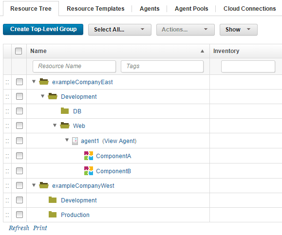

Resources
A resource is a logical deployment target that typically resolves to an agent and a user-defined construct that is based on the architectural model of HCL® UrbanCode™ Deploy.
Resources aid bookkeeping; inventory is tracked for resources. Resources are created and managed through the user interface.
A resource can represent an agent, agent pool, component, or an organizational entity that is used to group other resources. A component-type resource can point directly to the agent or agent pool that deploys it, or point to another resource in a hierarchical chain of resources. If a resource is part of a hierarchy, it delegates its automation, if any, up the chain until it finds an agent.
A resource represents a deployment target, such as a physical server, virtual machine, database, or Java™ Platform, Enterprise Edition container. Components are deployed to resources by agents (which are physical processes). Resources generally are hosted on the same host where its managing agent runs. A host can have more than one resource. If an agent is configured to handle multiple resources, a separate agent process runs for each one.
A resource can represent a physical server, which is the simplest configuration, or a specific target on a system, such as a database or server. So a host can have several resources represented on it. In addition, a resource can represent a process that is distributed over several physical or virtual machines. Finally, environments consist of resources.
To run a deployment, at least one resource must be defined and (usually) at least one agent. ("Usually" because trivial deployments can be done without an agent.) Typically, each host in a participating environment has an agent running on it to handle the resources that are located there.
A proxy resource is a resource that is effected by an agent on a host other than the one where the resource is located. If an agent does not require direct interaction with the file system or with process management on the host, a proxy resource can be used. When a deployment must interact with a service that is exposed on the network (a database or Java Platform, Enterprise Edition server, for instance), the interaction can happen from any server that has access to the networked service.
A group-type resource can represent any logical collection of resources. In the following illustration, the top-level resource, exampleCompanyEast, represents a data center that contains the Development subresource (which represents an environment). In this instance, the exampleCompanyEast resource does not point to any higher level resource. The resource ComponentA represents a component, and delegates its automation up the chain until it reaches the agent1 resource, which represents an agent. In order for an agent to be invoked, at least one resource must be defined for it.
Resources are created on the Resources page, which displays resources in a hierarchical tree structure. By displaying all resources across all environments, the Resources page provides a single place to see your entire infrastructure. Note: Resource names are limited to 255 characters.
The hierarchical structure is used wherever resources are used and not just on the Resources page, such as when assigning resources to environments. The hierarchical model is especially effective when several logical deployment targets reside on the same machine. In the accompanying illustration, the resources ComponentA and ComponentB could represent application servers on the same machine where the agent agent1 is located. Both can be individually targeted for deployment.
Selecting a resource selects every resource below it, if any, in the hierarchy; for example, deleting or moving the agent1 resource deletes or moves the ComponentA and ComponentB resources as well.

Whether you need one or multiple resources per environment is determined by your current infrastructure, deployment procedures, and other requirements. Many HCL UrbanCode Deploy users have significant differences among environments. Whatever your structure, the Resources page displays the entire infrastructure across all environments.
If you are using IBM® WebSphere® Application Server, you can import information from cells as resources; see Importing resources from WebSphere Application Server.
The resource tree
All of the resources on the HCL UrbanCode Deploy server are organized into the resource tree. Top-level resource groups contain resources and other resource groups, and so on. Therefore, to refer to a resource, you must specify its path on the resource tree. For example, if an agent resource that is named Agent1 is contained in the group /Agents, you can refer to the agent resource by the path /Agents/Agent1.
Resource groups
A resource group is a logical collection of resources. Resource groups enable collections of resources to be easily reused. Resource groups can manage multi-tenant scenarios, for example, in which several servers share resources.
- Getting started with creating resources
Resources associate agents with components and, after they are mapped to an application environment, provide deployment targets. - Modifying the resource tree
You can create, delete, and modify the contents of the resource tree. - Importing resources from WebSphere Application Server
Use the WebSphere Application Server - Deploy plug-in to import information about an IBM WebSphere Application Server system into a collection of resources. Typically, importing information by using the plug-in takes less time than manually creating resources to match the IBM WebSphere Application Server. - Importing resources from WebSphere Portal
With the WebSphere Portal plug-in, you can discover resources for a portal cell and use plug-in steps to deploy artifacts. - Defining default user impersonation credentials
You can define default user impersonation credentials for a resource. - Resource templates
A resource template is a model for a group of resources. The template contains a hierarchy of resources, groups, and agent prototypes that is a starting point for creating new resources. - Agents
An agent is a lightweight process that runs on a deployment-target host and communicates with the HCL UrbanCode Deploy server. - Agent relays
Agent relays coordinate communication between agents and the HCL UrbanCode Deploy server. Agent relays improve the performance of communication between the server and agents. Relays also allow agents to communicate through firewalls.
Parent topic: Modeling software deployment